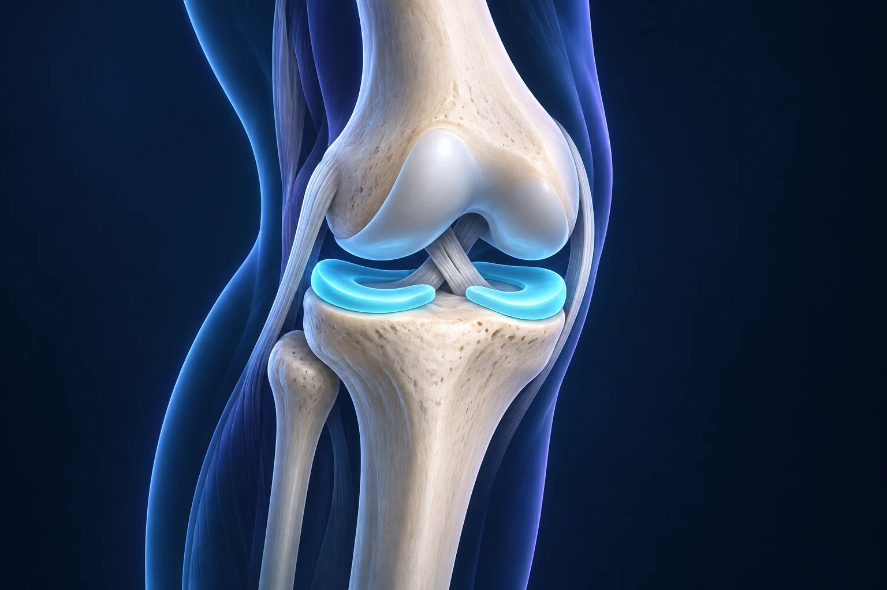

Une fissure du ménisque à l’IRM doit-elle toujours être opérée ?

Non. Une fissure méniscale visible à l’IRM ne suffit pas à décider d’une opération. Il faut comprendre comment elle est survenue, vérifier qu’elle explique vos symptômes et apprécier l’état du reste du genou. Certaines lésions peuvent être prises en charge sans chirurgie ; d’autres nécessitent une réparation ou un geste ciblé, parfois rapidement.
À quoi sert le ménisque ?
Chaque genou possède deux ménisques, situés entre le fémur et le tibia. Ces structures de fibrocartilage répartissent les charges et contribuent à la stabilité de l’articulation. Vous pouvez les imaginer comme des coussins ajustés entre deux surfaces : leur forme permet de mieux répartir les pressions.
Une lésion peut apparaître lors d’une torsion, par exemple au sport. Elle peut aussi se développer progressivement, avec les modifications du tissu liées au vieillissement du genou. On parle alors de lésion dégénérative. Ces situations ne conduisent pas automatiquement au même traitement.
Le mot « fissure » inquiète souvent parce qu’il évoque une pièce cassée qu’il faudrait obligatoirement remplacer. Pourtant, sa présence sur une image ne mesure ni l’intensité de la douleur ni la nécessité d’une intervention. Une autre structure du genou peut participer aux symptômes. Assurance Maladie, évaluation d’une douleur du genou.
Quels symptômes doivent faire consulter ?
Une douleur persistante sur un côté du genou, des gonflements répétés ou une gêne lors des rotations justifient un examen. Expliquez également si votre genou accroche, se dérobe ou ne s’étend plus complètement. Ces expressions décrivent des sensations différentes, que le médecin cherchera à préciser.
Un véritable blocage correspond à l’impossibilité persistante de déplier le genou. Après une torsion, il peut être lié à un fragment méniscal déplacé et nécessite un avis rapide. Un simple craquement indolore n’a pas la même portée. Une articulation très chaude et gonflée avec de la fièvre doit être évaluée en urgence, sans attribuer d’emblée les symptômes au ménisque.
En consultation, montrez avec un doigt où vous avez mal. Précisez si le problème a commencé brutalement ou progressivement, et quels gestes sont devenus difficiles. Une douleur à l’accroupissement, une limitation de marche et un blocage ne posent pas exactement la même question.
Pourquoi commence-t-on souvent sans opération ?
Lorsqu’une lésion est stable et ne provoque pas de blocage, un traitement conservateur peut être proposé. Il associe, selon les besoins, une adaptation des activités, un traitement antalgique et une rééducation. Préserver le ménisque reste un objectif important, même lorsqu’une anomalie est visible. Assurance Maladie, traitements des lésions méniscales.
La rééducation aide à retrouver de la mobilité, de la force et une utilisation plus confortable du genou. Elle n’a pas besoin d’effacer la fissure sur l’IRM pour être utile. Le résultat se juge aussi sur votre capacité à marcher, travailler ou reprendre une activité adaptée.
Pour certaines lésions dégénératives, un essai clinique a montré qu’un programme d’exercices conservait, à cinq ans, des résultats fonctionnels non inférieurs à ceux d’une méniscectomie partielle. Cette observation soutient le choix fréquent d’une prise en charge initiale sans chirurgie. Elle ne s’applique pas indistinctement à toutes les déchirures, notamment aux genoux réellement bloqués. Essai ESCAPE, suivi à cinq ans.
Une période de traitement médical doit avoir un objectif et un rendez-vous de réévaluation. Demandez ce que vous devez surveiller et à quel moment refaire le point si les progrès restent insuffisants. Attendre sans accompagnement n’est pas la même chose qu’essayer une stratégie organisée.
Dans quels cas la chirurgie devient-elle pertinente ?
La décision dépend du type de déchirure, de son déplacement éventuel, de la qualité du tissu, de vos symptômes et des lésions associées. Une déchirure traumatique réparable peut conduire à discuter une intervention. Une douleur persistante malgré une prise en charge adaptée mérite également une nouvelle analyse, sans rendre l’opération automatique.
Le chirurgien cherche autant que possible à conserver le tissu utile. Une suture peut rapprocher les berges de certaines lésions pour permettre leur cicatrisation. Si la partie abîmée ne peut pas être réparée et reste responsable d’une gêne mécanique, une résection limitée peut être discutée. AAOS, information sur les lésions méniscales aiguës isolées.
La présence d’une arthrose change l’analyse. Retirer une portion de ménisque ne traite pas l’ensemble de la maladie articulaire. Une arthroscopie de « nettoyage » n’est pas un traitement de routine de l’arthrose. NICE, prise en charge de l’arthrose.
Comment se déroule l’intervention et quelles sont les suites ?
La chirurgie se réalise généralement sous arthroscopie, à l’aide d’une caméra et d’instruments introduits par de petites incisions. Le geste reste une intervention sous anesthésie, avec des risques possibles d’infection, de phlébite, de raideur ou de douleurs persistantes. Une petite cicatrice ne signifie pas une récupération instantanée. Assurance Maladie, déroulement d’une arthroscopie.
Les consignes après une suture diffèrent souvent de celles données après une résection limitée. L’appui, la flexion et les activités sportives peuvent devoir être protégés. Le calendrier dépend du geste effectivement réalisé et des éventuelles lésions associées. Avant l’opération, demandez quelles adaptations prévoir pour le travail, les escaliers et les déplacements.
Quelle question poser avant de décider ?
La question la plus utile est : « Qu’est-ce qui permet de penser que cette lésion explique ma gêne, et quel bénéfice peut-on raisonnablement attendre du traitement proposé ? » Vous pouvez aussi demander ce qui est susceptible de se passer sans opération et quelles seront les contraintes de récupération.
Pour situer le geste, consultez les informations du Dr François Lozach sur la chirurgie du genou. Un rendez-vous avec le Dr François Lozach à Sète permet de confronter vos symptômes, votre examen et vos images avant toute décision.
Ces conseils sont d’ordre général et ne remplacent pas un avis médical personnalisé.